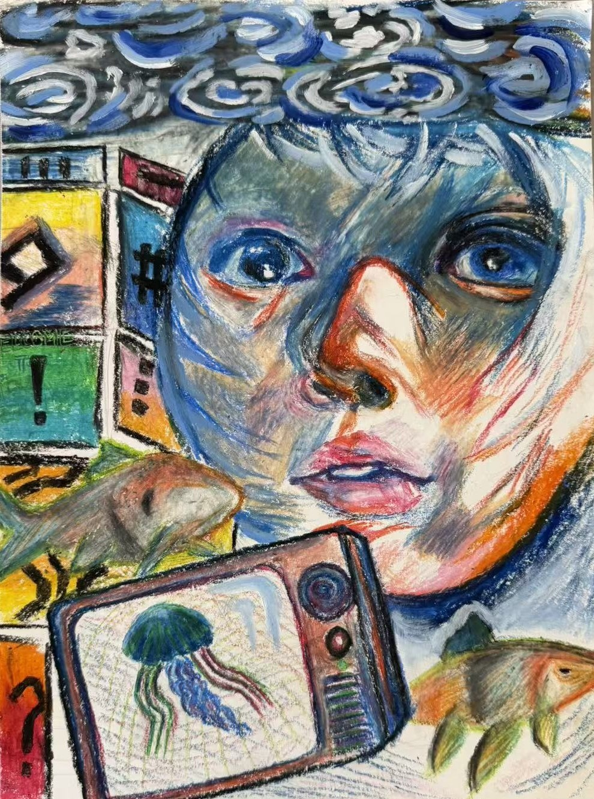
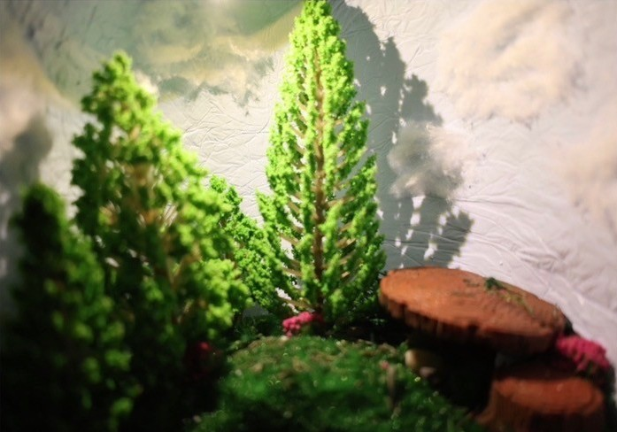
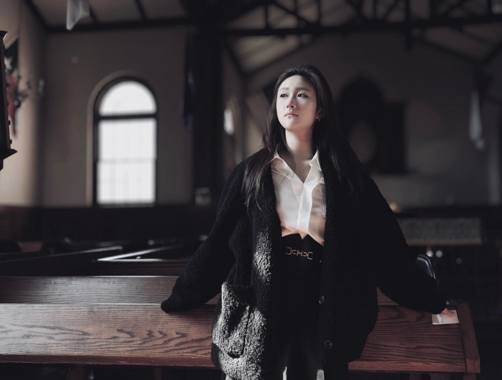
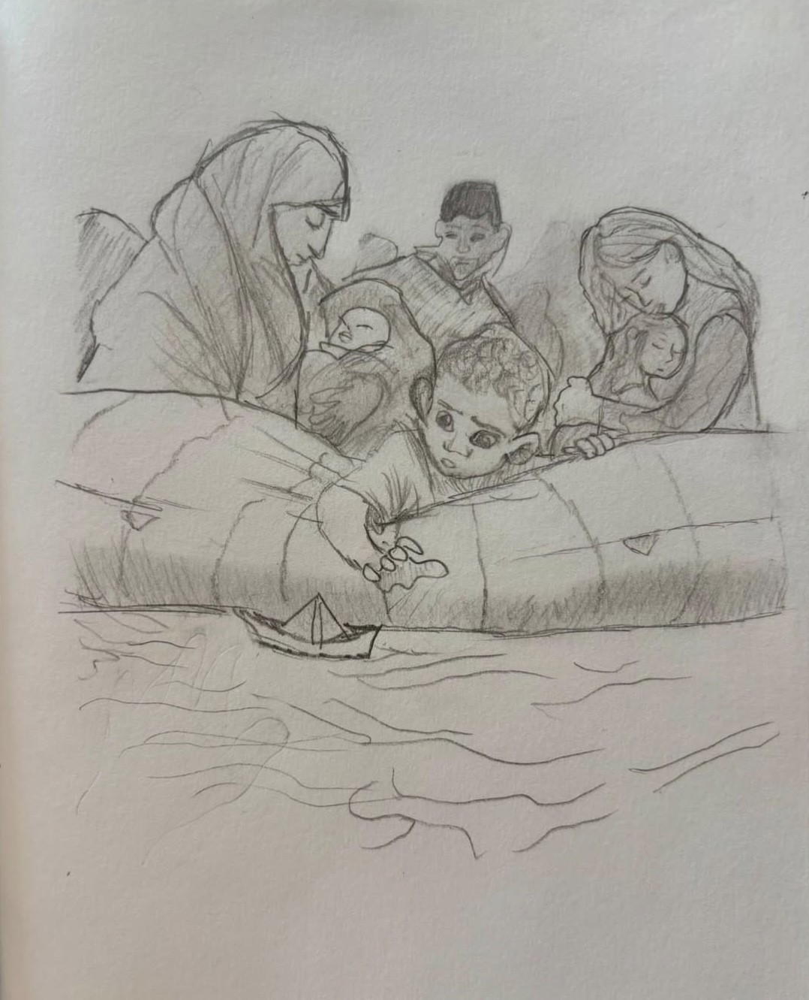
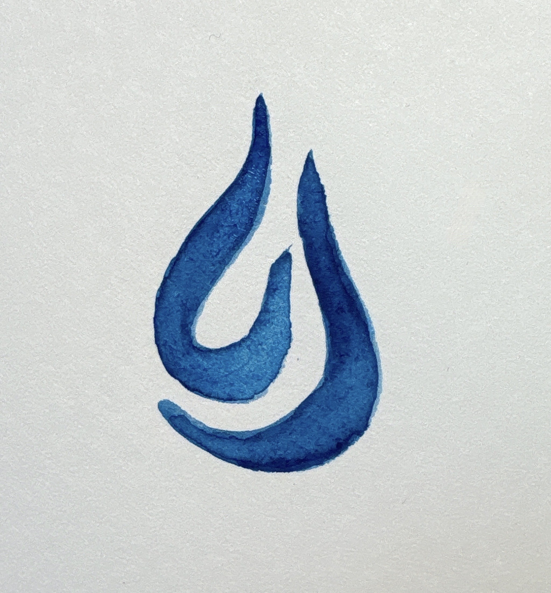
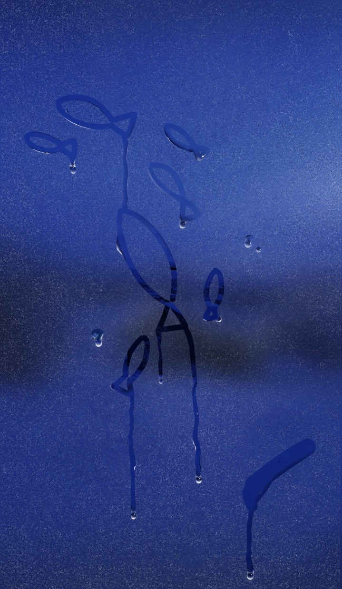
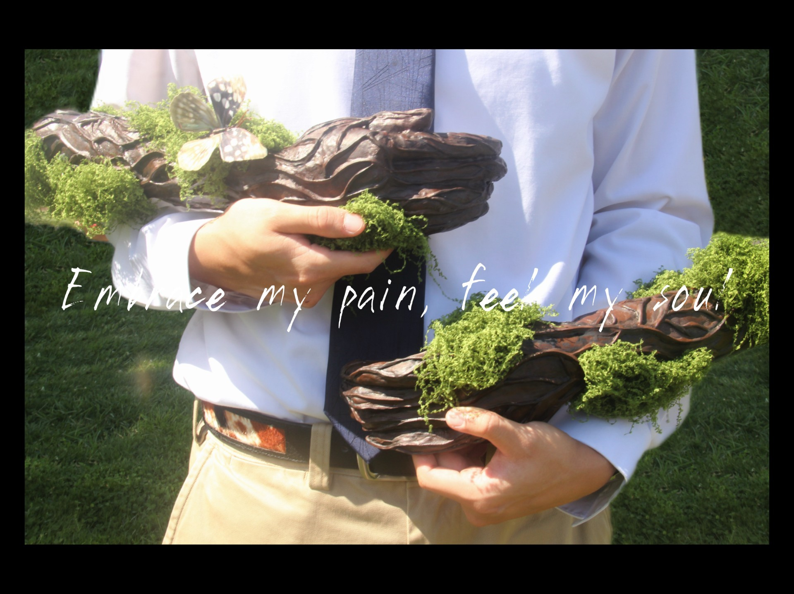

The R.A.I.N. Gallery
Artworks depicting nature and empathy for the vulnerable, for nature-based solutions to flooding. Available as printable cards.

Blossom
by Stella Kwon
Oil PaintDuring urban floods, water becomes a symbol of destruction and grief. 'Blossom' reimagines water as a serene canvas, a mirror of peace. The blossoms signal new beginnings, a reminder that after the harshest storms, serenity can bloom again.

Closer to the Ground
by Alexandra Traber
PoetryI was inspired by the floodings in Korea when I was writing this poem. It reflects the vulnerability of those who live 'closer the ground', and I used words to build empathy.

The Water That Doesn't Take
by Katherine Lee
PhotographWater can take everything — a home, a neighborhood, a sense of safety — but it can also hold the light. I wanted to photograph the version of water that people still love, the one that existed before it became something to fear, as a reminder of what resilience is actually protecting.

Tomorrow
by Claudia Van Clief
PoetryA powerful reflection contrasting everyday losses with the profound devastation of losing a home to disasters, urging us to pause and mourn with empathy.

The Deluge - Part 1 : To See
by Stella Kwon
Mixed MediaIn To See, the absence of eyes represents how we often encounter the suffering of others only through screens. We see images of people whose homes have been submerged, including those living in semi-basement apartments, as well as elderly people living in low-lying urban areas who are especially vulnerable to flooding. Around the world, floods have become increasingly severe, exposing the harsh reality of climate inequality: those who are most vulnerable are often the ones who suffer the greatest consequences. Yet, from the position of an observer, we can only see their suffering from a distance. We may recognize their pain, but we cannot fully understand what it means to experience the disaster from their perspective.

The Deluge - Part 2 : To Feel
by Stella Kwon
Mixed MediaTo Feel depicts me in 2022, when flooding became more than something I simply witnessed through a screen—it became something I experienced. That experience opened my eyes to the severity of flooding and allowed me to empathize with those who had been living through it. I realized that there was an enormous difference between what we see in the news and what people actually experience on the ground. I realized that truly understanding the emotions and suffering of others requires more than simply observing them from a distance; it requires us to place ourselves in their position. This realization became the foundation of To Feel, and it inspired me to expand my sense of empathy beyond my own experiences—to recognize and feel the experiences of people whose lives may be completely different from my own.

Where Memory Grows (Internal)
by Eva Ngaaje
SculptureThe original idea behind this piece is memory and how it affects a persons identity and the world around them. It also represents the role that positive memories and experiences play during suffering or hard times. Even if someone’s external circumstances are difficult, the experiences, people, places, and memories they have accumulated throughout their lives remain with them including the positive ones. And how that positively can leak out and make a good impact on the world around them even if it’s just a little or even if it just affects their perspective of a situation. The greenery that poors out of the head represents that aspect of impacting the world around you.

Where Memory Grows (External)
by Eva Ngaaje
SculptureThe original idea behind this piece is memory and how it affects a persons identity and the world around them. It also represents the role that positive memories and experiences play during suffering or hard times. Even if someone’s external circumstances are difficult, the experiences, people, places, and memories they have accumulated throughout their lives remain with them including the positive ones. And how that positively can leak out and make a good impact on the world around them even if it’s just a little or even if it just affects their perspective of a situation. The greenery that poors out of the head represents that aspect of impacting the world around you.

What we Carry
by Eva Ngaaje
PhotographyIt represents displacement and the way people carry places with them, how people still carry an image of happiness and hope in their hearts through difficult times.

Sanctuary
by Eva Ngaaje
'Sactuary' is about consoling human suffering, empathy, and giving hope. A sanctuary means refuge from suffering and the picture is taken in a chapel which fits, chapels usually represent emotional and spiritual peace along with hope as well since it’s a place people go to pray.

Paper Boat
by Elisa Cedat
PencilThis drawing portrays a family escaping city flood in a safety boat. The family is gathered closely together as they are carried through the flooded streets, seeking refuge from the rising water. In the foreground, a young boy reaches over the side of the boat, trying to catch his small paper boat floating away. The paper boat represents his innocence and childhood, contrasting with the destruction and uncertainty surrounding him.

Claire de Lune Vivian's Version
by Vivian Jang
Audio Art (Harp Performance)This was by far the hardest piece I’ve ever played. Though Claire de Lune is already well known, it’s an incredibly nuanced piece to take on, requiring something that many players overlook: delicacy and an almost featherlike touch. Meaning “moonlight,” Claire de Lune is the famous third movement of Claude Debussy’s Suite Bergamasque, a piece that shifted away from traditional music by focusing on atmosphere, colour, and fluid motion. There are many interpretations of the piece, with most drawing from Paul Verlaine’s original poem, which depicts a dreamlike, melancholy landscape beneath the moonlight. However, I found my own appreciation for it once I started interpreting it as my own—imagining the tide underneath the pale moonlight, starting off faint, rising and rising, then slowly receding again. Anyway!! It was incredibly rewarding to finally finish this piece!! It was difficult to transcribe onto the harp, and I’m so glad I can finally present my interpretation to you all! Hoorah!

by Sammie Tian

by Sammie Tian

Sea of Memories
by Elizabeth Zhong
Gouache (A3 Watercolor Paper)The Sea of Memories represents the power of water, reflecting on how it is not only the taker of life, but the giver of life. This gouache piece depicts two people sitting side by side on the ocean floor, looking back at their lives through film reels while the sea creatures pass by. Two people may have had their lives taken in a flood, but it is within the water that they may find their rest and solace, in the company of warm memories and nostalgia, and that of others that may have found their way there.

FEEL
by Bella Zhao
PhotographyWe often forget that we do not stand outside nature but move through its very veins. Nature becomes a pair of invisible hands, gently lifting us up, yet softly enclosing us—both shelter and boundary. All we can do is to live with nature and grow within it. When we cease trying to conquer or escape, and instead allow the elements of nature to slowly pass through our bodies, those once-sharp pains are met with the stillness of soil, the gentleness of water, and the warmth of light—embraced one by one, wrapped layer by layer, until they settle at last into the deepest, truest texture of life.